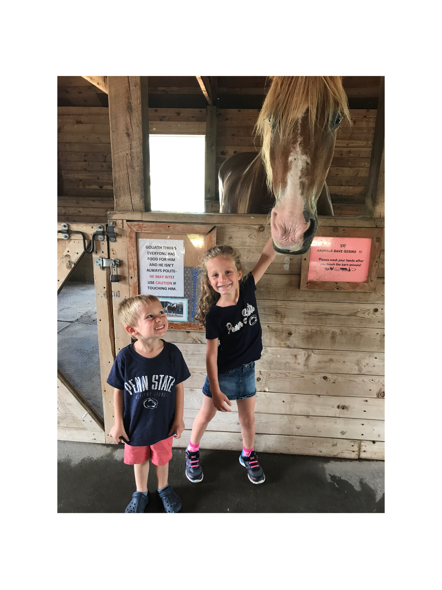
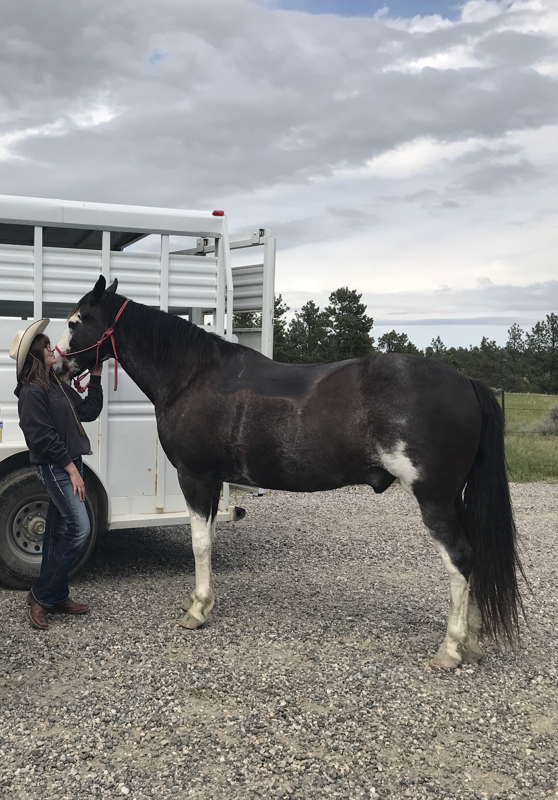
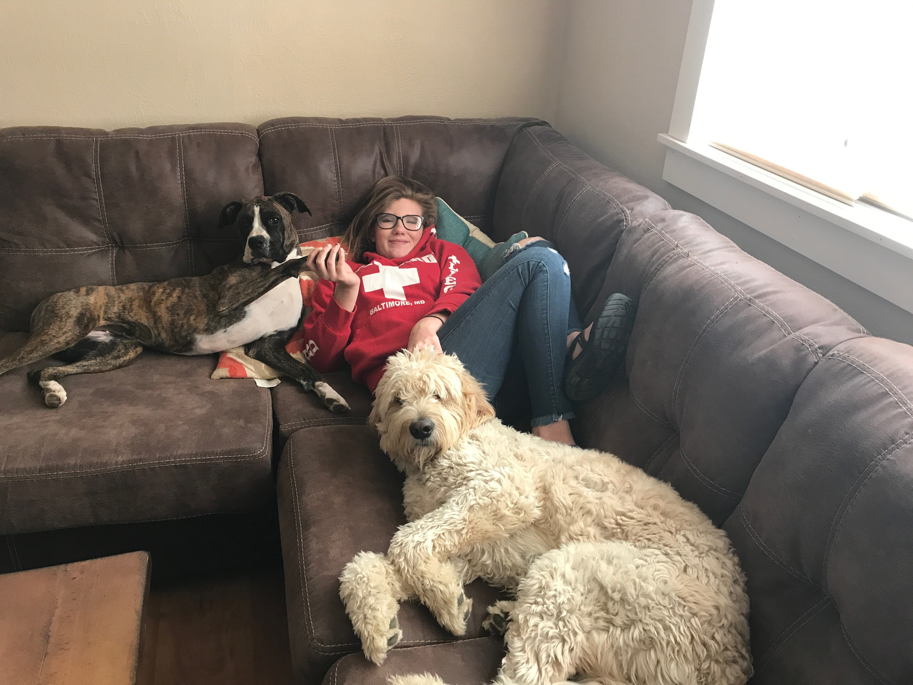
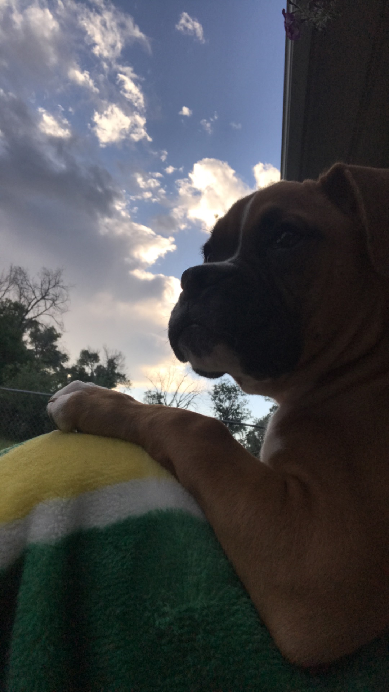

This is my golden doodle his name is Hunter, and he truly is the sweetest. He's my fishing, and hiking buddy. I have no idea what I would do without my dogs especially Hunter!
 Of all my animals beans definetly takes the most dedication. This photot was taken after one of my favorite rides. We went on a three and a half hour ride where we experienced beautiful 90 degree weather with the sunshining high, and in the matter of 30 minutes it was windy cold and strated raining. We came back smiling and laughing. This was also the week that my hourse started his diet so he wasn't to impressed with me if you couldn't tell.
These two are definetly my relaxation buddies. i don't have a lot of free time, but my dogs sure know how to fill what time I do have. Kaia the boxer sadly passed soon after this photo was taken, but she is still a huge part of our family.
This is the newest addition to our family her name is Jordan. She is a princess who loves to eat socks. This was her rest time after playing fetch for am hour.